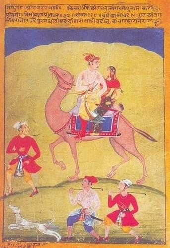

Maru-Ragini
Details
SUBJECT MATTER: From Ragamala Series, Maru-Ragini is a vertically painted painting in which the theme of Dhola-Maru is combined with the Ragmala theme in which Maru is shown as Raga Shri's female partner.
DESCRIPTION: In this Maru Ragini painting, the king i riding a camel with his queen.
The foreground of the painting is light green and the background is painted in yellow. Along with the camel riding royal couple, two male escorts are running to ensure their safety. A band of sky with blue colour has been shown in the center of yellow background and green foreground. The camel has been shown with full excitement and enthusiasm looking up towards the sky. The camel is being lead by an male attendent. Deep blue color is used for the band of sky. The flat flat colors are used for the dresses of characters in the painting. The transparent white color is also used in various places. The camel is well decorated fitting the theme. The King is looking at his queen sitting behind him and holding a flower in his right hand. On top of the painting Maru Shri Ragini is written. The samvat means circa 1685 C.E. Rhythemic lines are used to show the facial expressions of the characters. The colors used in the painting are bright, flat, and natural. This type of usage of colors tells us the story of heroines and heroes.
HUMAN VALUES:
1.Love and devotion of the royal couple for each other.
2.Loyality of escorts and attendents towards their King (Master). They are accompanying him to ensure his safety.